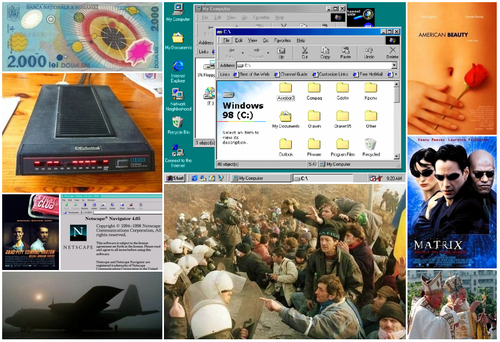
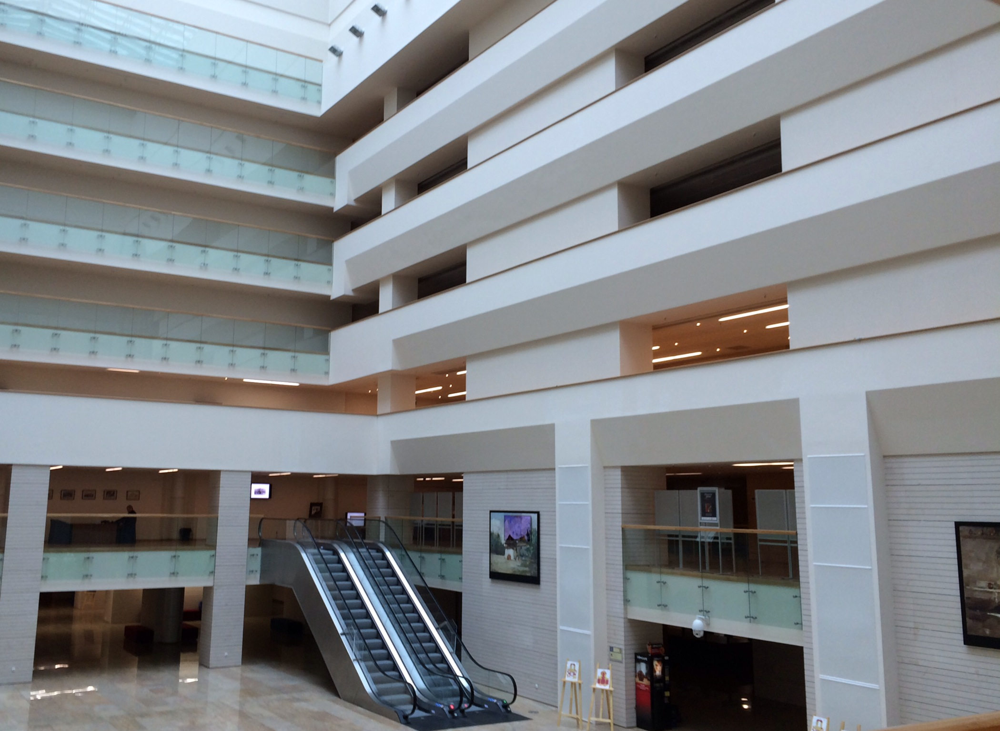
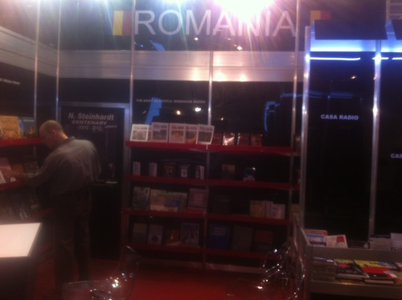

Cristian Dinu
Home
About
Articles
MCP Talk
2010s Article Archive
x
Monitorizarea și Controlul Proiectelor
Procesele din grupul de monitorizare și control au un rol esențial în desfășurarea proiectului. Deși deseori lumea numește acest grup “fază” – pentru că inițierea…
Dec 15, 2015
Managementul execuției proiectelor
Execuția, sau
Direcționarea și managementul execuției proiectelor
–
“Direct and Manage Project Execution”
– este o fază a proiectului (sau un
grup de procese
, cf. PMBoK)…
Dec 8, 2015
William Golding: Împăratul Muștelor
Deși este un roman serios de două sute de pagini, simt încă un miros de nuvelă, probabil mai ales din cauza lipsei îmbărligăturilor și întoarcerilor în loc ale acțiunii…
Sep 8, 2015
Feedback is fifty
În ultimele săptămâni mi s-a accentuat o mică aversiune față de un obicei din ce în ce mai întâlnit: limba engleză amestecată în proporție serioasă cu cea română, în…
Jan 3, 2015
Filmele și cărțile remarcabile ale lui 2014
Dec 26, 2014
Să votezi e responsabilitate. Să nu votezi e complicitate!
Foto: Standul României la Târgul Internațional de Carte de la Frankfurt, cel mai mare din lume, în 2013 (înainte de scandalul în presă provocat de numai 2-3 voci) și în 2014…
Oct 31, 2014
În rând cu lumea și uneori chiar peste ea: România la Frankfurt Book Fair, 2014
Ar fi o nedreptate să nu povestesc despre standul României la Salonul de Carte de la Frankfurt. Anul trecut, în 2013, am fost atât de dezamăgit de ceea ce s-a întâmplat…
Oct 23, 2014
Ioana, brânza și fermierii
Ioana merge la piață să cumpere brânză pentru copii. Știe că pețul normal e undeva în jur de 15-18 lei, dar pentru că le-a promis că va cumpăra numai de la ei patru ani acea…
Sep 18, 2014
Din nou la manualul unic - Incapacitatea și reaua-voinţă unui minister
Pe scurt - licitația pentru manualele fizice și digitale a luat o turnură odioasă. Nu intru în prea multe detalii, pentru ca le-ați citit probabil deja în presă. Articolul…
Aug 7, 2014

1999. Scurt ghid al călătorului în timp - partea 1
Iubit călător sau emigrant în lumea lui 1999,
Jun 28, 2014
J.D. Salinger: „De veghe în lanul de secară”
Este printre cărțile clasice pe care le ratasem, dar nu-mi pare rău. La un moment dat am avut regrete că nu n-am citit chestiile astea la timp la timp. Am citit mereu, dar…
Jun 17, 2014
Maleficent
Pentru că nu am putut suporta presiunea de a mă plictisi la o finală de Roland Garros cu o miză atât de mare, am ocupat unul dintre de locurile lăsate libere de eurosportivi…
Jun 8, 2014
Haruki Murakami: 1Q84
După ce i-am terminat cele mai mult de 1200 de pagini, nu-mi dau seama dacă sunt mai bine sau la fel față de înaintea citirii lui
1Q84
. La început m-a iritat pentru că mi…
Jun 1, 2014
“Simboluri ale democrației”
Ridicam degetul acum câteva săptămâni spre Ministerul Educației și Centrul Naţional de Evaluare şi Examinare (C.N.E.E.), aflat în subordinea sa. Acuzam CNEE că a organizat o…
May 11, 2014
“Tu ce faci fă, Școală, aicea? Aveai chef de niște manuale?”
Ceea ce se întâmplă în aceste zile nu mă surprinde, era previzibil, la fel ca scuipatul pe jos al unui mitocan sau parcatul cu botul pe trotuar al unui Audi.
Apr 24, 2014
Milan Kundera, “Insuportabila ușurătate a ființei”
Aceasta e una dintre acele cărți care îmi trag o brazdă în creier, amestecă lucruri pe acolo și produc un fel de traumă ce nu se vindecă vreodată.
Apr 20, 2014
Bestia
Bestia mă ia în brațe pe dinăuntru
îmi stânge plămânii, se împinge de ficat
intră în glezne unde toarnă smoală pe tendoane
urcă și îmi agită stomacul, usucă gâtul,
țipă la…
Apr 11, 2014

Știți poate că eu cu Biblioteca Națională am o complexă relație de iubire-ură. Azi însă sunt alături de ea, încercând să o apăr, măcar prin a comunica ceea ce se întâmplă.…
Mar 10, 2014
Care ți-e insula, amice?
Acum câteva zile am auzit o părere care m-a intrigat, pentru că pare (și poate este) perfect adevărată:
“Cei care nu sunt născuți în București, dar trăiesc în București au…
Mar 9, 2014
N-o să mai facă…
Azi, când pare că nimic nu merge în România, iată o poveste adevărată, care dovedește că unele lucruri merg bine. De data aceasta la Poliție și la Justiție
Jan 26, 2014
Dragă Românie - Episodul 4
Unii își trimit scrisori către propria persoană din viitor. Dar azi îmi trimit o scrisoare către mine din trecut.
Jan 19, 2014
Dragă Românie - Episodul 3
Dragă profesore,
Jan 11, 2014
Dragă Românie - Episodul 1
Jan 10, 2014
Dragă Românie - Episodul 2
Draga părinte,
Jan 10, 2014
Dostoievski: “Idiotul”
Încă mi se pare că am fost într-o călătorie, nu că am citit o carte. Sunt câteva zile deja de când am terminat să o citesc și personajele îmi stăruie serios în minte, iar o…
Jan 8, 2014
Slide-urile pentru atelierul de marketing online @ Exec-Edu
link direct
Dec 12, 2013
Prezentare despre management de proiect și tehnologie
Aceastea sunt slide-urile pentru prezentarea pe care o voi ține azi la Business Days București, în cadrul panel-ului în care sunt invitat.
Dec 11, 2013
Împreună pentru un Facebook mai bun!
Chiar și cei mai mari scriitori trăiesc blocaje când vor să scrie ceva nou.
Dec 8, 2013
Centrul vechi: Stâna și zgârie-norul
Pentru unii este “sufletul orașului” redat, în sfârșit, oamenilor. Pentru alții este locul de lungit beri și cafele până la trei dimineața, cu gașca. Pentru bicicliști este…
Dec 7, 2013
Micul prinț, o carte de recitit pentru oamenii mari
Dec 1, 2013
Azi dimineață, traficul fiind inexplicabil rarefiat, am ajuns la birou cu sfert de oră mai devreme. Mai rămăsese niște cafea în cană-to-go, și “Pe strada Mântuleasa” stătea…
Nov 20, 2013

“Am vazut. Daca am vazut, am vazut!”
sau
Câinii latră, târgul trece
Nov 16, 2013
Despre manuale digitale, în emisiunea “iClasa” la Cultural
Am avut plăcerea să particip sâmbătă la emisiunea Mirelei Stana pentru a vorbi despre manuale digitale. Ca și celelalte vizite la Radio România, și de data aceasta am avut…
Nov 15, 2013
“O paralelă în sensul plutarhic”
Am fost trist azi când am aflat de dispariția Dilematecii. N-am citit-o prea des, recunosc, iar atunci când am citit-o am făcut-o admirând mai degrabă elocvența decât…
Nov 1, 2013
Cel gol, cel anost, cel irelevant - 3 în 1 la standul României de la Frankfurt Book Fair
Una dintre bucuriile plecatului din țară este aceea de a descoperi locuri și oameni. Alta este că te îndepărtezi de porcăriile de care te împiedici cotidian și de otrăvurile…
Oct 19, 2013
Adevărul: Liceul Kretzulescu. Cum se învaţă în prima clasă „inteligentă“ din România. „Cursurile sunt ca un teambuilding”
Prima clasă digitală, inaugurată la începutul anului, este locul unde elevii şi profesorii comunică şi învaţă împreună pe tablete şi manuale digitale. În timp ce dascălii…
Oct 7, 2013
Suceava
În prima zi de octombrie, pe când Bucureștiul este o mică Veneție și Brașovul se pregătește parcă să-l primească pe Moș Crăciun, Suceava ignoră chinurile vremii și pare să…
Oct 2, 2013
Lecanoș
Balcanii nu se dezmint; zborul de șapte fără zece e programat deja pentru și un sfert. Oamenii așteaptă elegant cu sacoul pus peste mânerul ridicat al troller-ului, cu…
Sep 21, 2013
Articol: “«George Enescu» 2.0: cum a ajuns un festival celebru în pas cu vremurile, pe Internet şi pe smartphone”
Festivalul „George Enescu” a ajuns anul acesta la cea de-a 21-a ediţie, dar aceasta este şi prima în care parcă s-a schimbat ceva, iar schimbarea a pornit din 2011.…
Sep 20, 2013
Ce facem cu băiatul?
– Vă plac blondele, așa-i?
Sep 13, 2013
Homo ex machina: Orange și orchestra turcilor mecanici
sau Inteligența Artificială Artificială
Sep 12, 2013
Articol: Ei sunt tinerii care au “digitalizat” Festivalul George Enescu. Site-ul a avut peste 8.000 de vizitatori in prima zi a evenimentului
In 2011, cand lucrau la Humanitas Digital, au creat primele aplicatii de tablete pentru scriitori romani. Erau aplicatii create pentru Mircea Cartarescu si pentru…
Sep 2, 2013
La Piatra Neamț
N-am mai fost de ceva vreme în Piatra și ieri când am ajuns am găsit-o mult schimbată în bine. Noaptea la unsprezece jumătate când am ajuns nu mai era cine știe ce lume, dar…
Jul 30, 2013
Show aviatic la București
Sunt anumite momente când e bine să fii bucureștean și în plus să nu pleci în iulie în vacanță. Pentru că așa poți să vezi spectacolul aviatic de la Băneasa.
Jul 29, 2013
Călărașĭ - certificat de naștere al orașului (1853)
Azi am primit un cadou pe cât de interesant pe atât de neașteptat. Este vorba de un facsimil al unei pagini de Monitor Oficial din 1853, trimisă de prietenii de la Revista…
Jul 25, 2013
București – Furie da. Nostalgie nu.
(conține foto din București 2003)
Jul 21, 2013
Biții și școala
Un lucru aparent mărunt care se întâmplă în aceste zile în România, pierdut între știri despre MCV și corupție, pune bazele la ceva ce poate schimba serios în bine soarta…
Jul 19, 2013
Racheta albă, pămănt între stele
Ca să vedeți, stimați tovarăși, am reușit să elucidez un mister vechi de aproape treizeci de ani. Știți, copil fiind nu prea înțelegeam eu tot ce era la televizor, nici…
Jul 15, 2013
Volk și Zayats – doi demoni roșii ai copilăriei
Am găsit azi în tomberonul de aplicații Windows una care strânge la un loc toate episoadele lui
Nu, Zayats, nu pogodi!
. Este surogatul ce îmi era servit în anii 80 în loc de…
Jul 13, 2013
Omagiu pentru ZX Spectrum
Primul calculator l-am avut în 1992, aventură ce i-a costat pe părinții mei 12 mii de lei, adică vreo patru salarii românești din acea vreme. Era clonă de ZX Spectrum…
Jul 11, 2013
Processing fun
Regula, nu numai în programare, este că pentru fiecare treabă pe care o ai de făcut ai nevoie de un tip de unealtă. Magazin online? Magento. Manuale electronice? HTML5.…
Jul 11, 2013
1 an de Read Forward Editions, deși a trecut repede, a însemnat foarte mult.
Jun 20, 2013
Interviu la Radio România Internațional: "Read Forward, de la cărţi digitale la aplicaţii pentru copii"
Jun 17, 2013
On the one hand information wants to be expensive because it’s so valuable. The right information in the right place just changes your life. On the other hand, information…
Jun 11, 2013
Cu bicicleta în Lunca Argeșului
Pentru a salva o sâmbătă, am deschis Google Maps cercetând ce ar fi de văzut în jurul Bucureștiului interesant, care să fie la maxim 30 de kilometri și pe care să nu-l fi…
May 27, 2013
1 Mai
' .1 Mai în Filaret (2013) .
May 2, 2013
Luna roz
Ce s-a văzut din rândul șase la Gala
Bun de tipar
2013
Apr 26, 2013
Gala bun de tipar
Apr 25, 2013
Thomas și prietenii săi salahori
despre rasism, inegalitate și abrutizare într-o utopie britanică pentru copii
Apr 24, 2013
Biblioteca ziua 3
Apr 19, 2013
Steam Jet
Apr 19, 2013
Trompeta Carpaților
sau
Biblioteca Națională - Ziua trei
. Include la final un
mic ghid de utilizare
.
Apr 19, 2013
Play
Apr 17, 2013
“În afară de sinucidere, nimic nu este regretabil…”
sau
Biblioteca Națională - Ziua doi
Apr 13, 2013
' .Vedere din bibliotecă .
Apr 13, 2013
Prima zi la bibliotecă
La Biblioteca Națională, la fel ca peste tot pe unde mă învârt în ultima vreme, este o tocană de contraste. Clădirea în sine este nouă și frumoasă, dar din păcate Vitruviu…
Apr 11, 2013
Ogden Nash: Carnavalul Animalelor (trad.)
Ogden Nash a scris versuri pentru a acompania excelenta suită a lui Saint-Saëns, “Carnavalul animalelor”. Mi-au plăcut atât de mult încât nu am putut să mă abțin să încerc…
Apr 10, 2013
Sunt fonograful Edison (traducere)
Sunt fonograful Edison, creat de marele vrăjitor al Lumii Noi, pentru a-i încânta pe cei ce vor o melodie sau să vor să se simtă bine. Pot să îți cânt melodii tandre de…
Mar 25, 2013
De la fiecare după posibilități, fiecăruia după nevoi
Dacă un vecin îți bagă mâna în portofel și ia o parte din bani sub privirile încurajatoare ale celorlalți vecini și ale polițistului, spunând că banii i se cuvin, fiindcă tu…
Mar 19, 2013
Mixer
M-am trezit dimineață cu poeziile copilăriei amestecate în cap. Iată-le:
Mar 16, 2013
– Aveți și pizze ceva mai mici? Nu îmi este atât de foame, îl întreb pe ospătarul care aștepta răbdător și zâmbitor să-i zic ce vreau.
Mar 12, 2013
La o generație distanță
Statul mă vrea curat și legat emoțional de locul în care m-am născut, alfel nu îmi explic de ce o dată pe an găsește un pretext și mă trimite la Pitești după vreun cazier.…
Mar 12, 2013
La noi în țară lumea consideră în general că nu e normal să cerșești
Mar 7, 2013
De ce cu România e altfel?
Cu România ești într-o relație. O iubești, te cerți cu ea, te împaci, vrei s-o lași, te răzgândești, apoi fugi și te duci câteva luni la alta mai bogată. După care te…
Feb 21, 2013
Orhan Pamuk: Kar (Zăpada)
Pofteam după literatură și iată că mi s-a dat: Pamuk.”Zăpada”. Un roman alb cap-coadă, de la copertă (am citit ediția de la Curtea Veche), trecând prin ce se întâmplă în…
Feb 7, 2013
Cred că trebuie să ne mutăm într-o țară cu chirie
Cei care au stat și în casa lor și cu chirie știu care este diferența între reacția pe care o ai atunci când vezi o pată de apă în colțul tavanului în fiecare dintre cele…
Jan 29, 2013
An error occurred.
Try watching this video on www.youtube.com, or enable JavaScript if it is disabled in your browser.
Jan 29, 2013
Sunt unele lucruri bune care vin pe gratis. De exemplu cărțile electornice din seria Read Forward Editions.
Jan 21, 2013
Moartea Muzeelor
Știu de ce nu-mi place: în muzeele din București principalul exponat este Moartea. Ubicuă, în diverese forme, pare să fie prezentă peste tot și în tot, ea sigur a dat like…
Jan 9, 2013
Cum să convertești automat din € în lei în Google Spreadsheets
Dacă aveți nevoie să faceți transformări din lei în euro sau invers atunci când lucrați în Google Apps, puteți folosi funcțiile de la Google Finance. Mai jos un exemplu:
Jan 2, 2013
Gadget-urile pe care le aveam în 2003. De la stânga la dreapta, Palm m505, display non-retina 160x160 px, storage 8 megabytes, CPU single core 33 MHz. Urmează Benefon Esc!…
Jan 1, 2013
Oamenii fac lucruri care, dacă n-ar fi proşti, nu i-ar putea sili nimeni să le facă.
Dec 30, 2012
Genius autobasae
Spiritul real al orașului se cristalizează cel mai pregnant într-un singur loc și acela nu este primăria sau piața publică, ci autogara.
Dec 28, 2012
23 pe 22
Azi se împlinesc 23 de ani de la Revoluție. Fix diferența de vârstă între mine și părinții mei. Sfârșitul lui decembrie este întodeauna o perioadă de amintire, dar această…
Dec 22, 2012
Aceasta este conținutul sacoșei primite cadou de la grădiniță de la țară de un copil de trei ani și jumătate. Se pare că statul nu prea vrea să plătească pensii…
Dec 21, 2012
Liber ?!
La intersecția Udriște cu Mircea Vodă, un polițist gras trece agale strada și un taximetrist face cuminte dreapta pe verde intermitent. După două secunde de gândire…
Dec 20, 2012
Amor amoricios
Înainte să mă trezesc azi am visat, inexplicabil, trei fraze șoptite parcă de Caragiale. Restul au venit de la sine, tot inexplicabil.
Iată-le:
Dec 16, 2012
Oprimațiilor le este permis o dată la câțiva ani să decidă care anume reprezentanți ai clasei asupritoare îi vor reprezenta și îi vor reprima
Dec 15, 2012
Dec 15, 2012
Aiurea-n gară, la Pitești
Pe mine iarna m-a luat prin surprindere.. din nou. Când ies din casă mă simt abuzat de frig… iar de zăpadă, nici nu mai vorbesc . Mă îmbrac special subțire, sperând că în…
Dec 14, 2012
Ziua națională. De la 10 la 1.
(notițe en-passant)
Dec 1, 2012
(traducere) Monty Python, Dramaturg și clasa muncitoare
Try watching this video on www.youtube.com, or enable JavaScript if it is disabled in your browser.
Nov 23, 2012
Aviația ovină —Traducere din scenariul Monty Python
Try watching this video on www.youtube.com, or enable JavaScript if it is disabled in your browser.
Nov 17, 2012
Culture Forward -- Noaptea Bibliotecilor - Biblioteca Academiei
from
Cristian Dinu
Oct 6, 2012
Dacă toate tavanele ar fi ecrane…
Dacă toate tavanele ar fi ecrane și oricine ar putea să afișeze orice pe ele, oare câți ar alege să-și pună deasupra capului o imagine cu cerul? Probabil majoritatea, dar…
Jun 19, 2012
Az a két hét váratlan módon gazdagították az életemet
..adică “cele două săptămâni care mi-au îmbogățit neașteptat viața”.
May 23, 2012
Pielea in care traiesc (La piel que habito), film 2011 — impresii
Mă gândesc mereu că autorilor de scenarii (și creatorilor de artă în general) trebuie să le fie foarte greu să inventeze mereu ceva cu totul nou. Și că de aceea este normal…
Jan 14, 2012
Pina, film 2011 — impresii
Au trecut niște zeci de secunde din genericul de final înainte de a mă întoarce în real și primul cuvânt ce mi-a venit în minte a fost “Sacrebleu!”. Nu știu de unde l-am…
Jan 10, 2012
re-covers: El-Zorab
Soarele se ridicase doar puțin peste dunele dinspre Bab-el-Manteb, iar frigul nopții din deșert se dezlipea ușor de hainele sărăcăcioase ale lui Ben-Ardun când acesta bătu…
Nov 29, 2011
Exo-anima [ficțiune]
Nimeni nu știa cum a apărut acest tânăr în sat. Se zice că era din Capitală și că el singur ceruse Partidului să fie repartizat învățător acolo. Sătenii îl primiseră cum nu…
Nov 28, 2011
Management de proiect - prezentare suport de curs (partea 1)
from
Cristian Dinu
Nov 7, 2011
re-covers: Greierele și Furnica. Jurnalul unei furnici imposibil de mulțumit
28 noiembrie
Nov 3, 2011
re-covers: Aripi mentale — Puiul
M-am născut pe câmp, într-o familie cu mulți frați și o mamă singură. Acolo, în lanul de grâu nimeni nu te ajută. Ne-a crescut pe toți așa cum a știut ea cel mai bine, cu…
Oct 28, 2011
re-covers: Meșterul Manole, MBA
– Dragi colegi, este esențial să terminăm acest proiect până la sfârșitul trimestrului curent, pentru că altfel impactul negativ, atât asupra afacerilor clientului cât și…
Oct 23, 2011
2011-01-27 Jules Verne despre viitorul cartii, Bucuresti
from
Cristian Dinu
Oct 23, 2011
Mihail Bulgakov: “Maestrul și margareta” — Recenzia unui un vis bizar
Aug 5, 2011
O ficțiune mai veche
Am privit-o deja de atâtea ori trecând spre casă încât îi cunosc mersul, gesturile, prietenii, îmbrăcămintea şi aproape tot ce se poate ști despre o femeie pe care ai…
Jul 19, 2011
TRN-07 PMI Global Congress EMEA - TRN07 - Risk Governance -Creating a Risk Super Structure for the Projects (Cristian Dinu)
from
Cristian Dinu
May 8, 2011
David Foenkinos: “Despărțirile noastre” — Recenzie mediocră pentru o carte puțin peste mediocră
“Despărțirile noastre” este una dintre cele mai recente realizări ale junelui literat francez David Foenkinos. O carte bună te face să îți pui întrebări, iar această carte…
May 3, 2011
TRN07 - Risk Governance -Creating a Risk Super Structure for the Projects
from
Cristian Dinu
May 3, 2011
Success fără Stress - Meetings 4 Success Bacău Romania [Romanian]
from
Cristian Dinu
Nov 15, 2010
Lo-lee-ta
Lolita şi pot să spun că nu este nici pe departe un roman pe care să îl savurezi pentru că eşti bărbat… cred că din acest punct de vedere cartea îşi tratează fără…
Aug 20, 2010
Risk Management (managementul riscului) presentation at PMI Monthly Meeting
from
Cristian Dinu
Jun 19, 2010
Presentation on Infoideea in Feb 2009 [Romanian]
from
Cristian Dinu
Feb 19, 2010
Waterfall vs. Guerilla PM - PMI MM Infoideea in Feb 2009 [Romanian]
from
Cristian Dinu
Feb 19, 2010
PM Vision - Project Management 2.0, Bucharest, 2008 [Romanian]
from
Cristian Dinu
May 15, 2008
No matching items